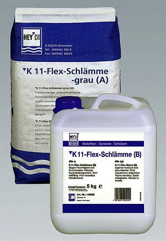
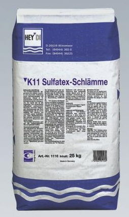
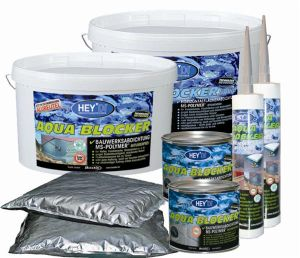
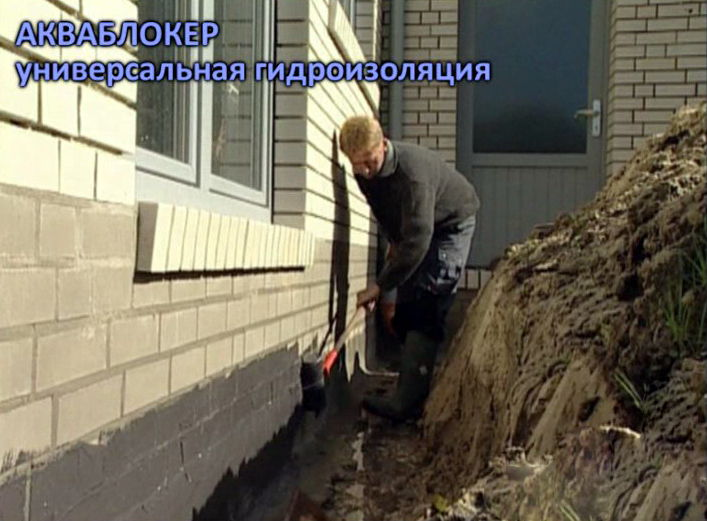
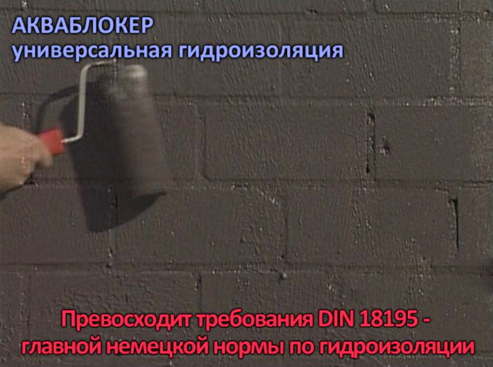
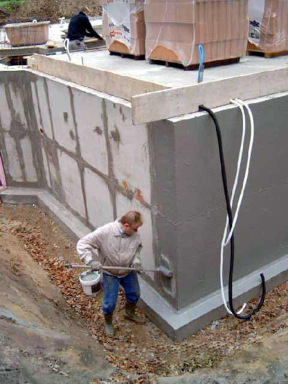
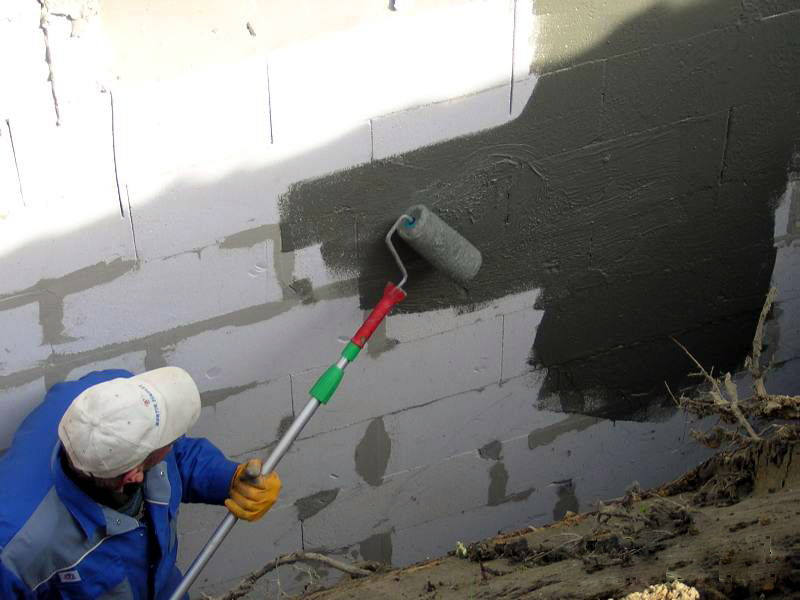
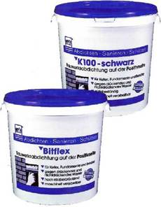

Гидроизоляция подвала снаружи
Между устройством наружной и внутренней гидроизоляции имеется существенная разница. В первом случае гидроизоляции подвергают внешнюю сторону строения, и напор воды извне прижимает гидроизоляционное покрытие к основе. Во втором - отрывает от нее.
Именно поэтому наружная гидроизоляция подвала может выполняться и битумными мастиками и рулонными покрытиями и материалами на цементной основе, а гидроизоляция подвала изнутри – преимущественно материалами на цементной основе, которые обладают хорошей адгезией к бетону или кирпичу несущей конструкции.
Если восстановление наружной гидроизоляции заглубленных частей подвала затруднительно, например, из-за невозможности проведения земляных работ, то применяют гидроизоляцию подвала изнутри.
1. Гидроизоляция подвала Серым шламом К11
 Гидроизоляционная смесь Серый шлам К11 обеспечивает быструю, надежную и долговременную наружную гидроизоляцию подвалов от воды, которая воздействует с внешней стороны строительной конструкции. Этот шлам является жестким шламом и наносится на поверхности, не подверженные растрескиванию.
Гидроизоляционная смесь Серый шлам К11 обеспечивает быструю, надежную и долговременную наружную гидроизоляцию подвалов от воды, которая воздействует с внешней стороны строительной конструкции. Этот шлам является жестким шламом и наносится на поверхности, не подверженные растрескиванию.
Серый шлам К11
Серый шлам К11 - однокомпонентный минеральный шлам - сухая гидроизоляционная смесь.
Серый шлам К11 предназначен для долговременной гидроизоляции сооружений из бетона, кирпича и цементной штукатурки от влажности грунта и воды под давлением. Применяется для наружной гидроизоляции подвалов, гидроизоляции гаражей, бетонных конструкций, покрытия внутренней поверхности резервуаров для питьевой воды, а также для изготовления гидроизоляционного слоя между подвальным цоколем и основанием стены. Без сопутствующих мер этот шлам может применяться только для сооружений, на покрываемых поверхностях которых длительное время не образуются трещины. Выдерживает давление до 140 м водяного столба, обладает хорошим сцеплением с поверхностью, может выдерживать нагрузку вскоре после нанесения, устойчив к морской воде и низким температурам.
Нанесение шлама осуществляется щёткой, кистью или подходящим распылителем.
Расход
Защита от влажности грунта - прим. 2 кг/м2 (толщина сухого слоя прибл. 1,2 мм).
Изоляция от напорной воды - прим. 4 кг/м2 (толщина сухого слоя прибл. 2,4 мм).
Форма поставки
Мешок 25 кг.
2. Гидроизоляция подвала Эластичным Серым шламом К11

Гидроизоляционное покрытие на основе Эластичного Серого шлама К11 обладает исключительно сильным сцеплением с основанием (1,6 Н/мм2) и перекрывает микротрещины. Обеспечивает надежную, долгосрочную гидроизоляцию подвала изнутри от напорной воды, воздействующей с внешней стороны, а также наружную гидроизоляцию подвала, наносимую с внешней стороны строительной конструкции.Эластичный серый шлам К11
Двухкомпонентный гидроизоляционный шлам, состоящий из сухой гидроизоляционной смеси и слабовязкой полимерной эмульсии.
Эластичный серый шлам К11 предназначен для долгосрочной и надежной защиты от напорной воды, воздействующей как с внутренней, так и с наружной стороны строительной конструкции. Используется для гидроизоляции подвалов, гидроизоляции гаражей, туннелей, шахт, колодцев.
Может использоваться в качестве адгезионного слоя при санации бетонных сооружений. Сразу после отвердения образует на устойчивых, не содержащих гипс, минеральных основах изоляционный слой, чрезвычайно прочно связанный с основой. Выдерживает нагрузки вскоре после нанесения, устойчив к морозу и к морской воде, перекрывает микротрещины.
Нанесение гидроизоляции Эластичным серым шламом К11 осуществляется щёткой, кистью или подходящим распылителем.
Расход
2,5 - 3 кг/м2 (толщина сухого слоя 1,5 - 1,8 мм).
Форма поставки
Компонент А - мешок 15 кг.
Компонент В - канистра 5 кг.
3. Гидроизоляция подвала Шламом К11 Сульфатекс

Сухая гидроизоляционная смесь Шлам К11 Сульфатекс обладает исключительно хорошей адгезией к основанию, не содержит веществ, агрессивных к металлам, предотвращает выцветы. Обеспечивает надежную, долговременную наружную гидроизоляцию подвалов, гидроизоляцию гаражей от почвенной влаги и любой другой воды, насыщенной сульфатами.Шлам К11 Сульфатекс
Однкомпонентный минеральный шлам - сульфатостойкая сухая гидроизоляционная смесь.
Шлам К11 Сульфатекс предназначен для долговременной внешней гидроизоляции строительных конструкций от влажности грунта и воды под давлением, даже в случае чрезмерной насыщенности среды сульфатами. Используется как наружная гидроизоляция подвалов, подземных конструкций, фундаментов зданий, гидроизоляция гаражей, различных бетонных элементов, плавательных бассейнов, резервуаров для питьевой воды, а также соприкасающихся с водой участков таких сооружений, как канализационные коллекторы и системы, в частности трубы, шахты, канавы и т.д. Применяться в качестве гидроизоляции между фундаментом и стеновой кладкой. Наносится на любые прочные минеральные основы, не содержащие гипс.
Обеспечивает хорошую защиту от вредных для бетонных конструкций сульфатов. Не содержит веществ, агрессивных по отношению к металлам. Обладает исключительно хорошей адгезией, через короткое время после нанесения способен нести нагрузку, предотвращает выцветы, выдерживает давление до 70 м водяного столба. После первого контакта с водой навсегда становится водостойким. Продукты реакции проникают в основу и заполняют поры. После затвердевания покрытие становится невосприимчивым к морозам и устойчивым к морской воде.
Наносится Шлам Сульфатекс К11 на поверхность, обращенную к воде, щёткой, кистью или подходящим распылителем.
Расход
Защита от влажности грунта - прим. 2 – 3 кг/м2 (толщина сухого слоя прибл. 1,2 мм).
Изоляция от напорной воды - прим. 4 - 6 кг/м2 (толщина сухого слоя прибл. 2,4 мм).
Форма поставки
Мешок 25 кг.
4. Гидроизоляция подвала эластичным Шламом Ардалон 2К плюс
 Двухкомпонентная эластичная гидроизоляционная смесь Ардалон 2К плюс обеспечивает быстрое, получение надежной эластичной и долговременной наружной гидроизоляции подвала от воды, воздействующей снаружи, особенно в местах, подверженных образованию трещин до 2,0 мм.
Двухкомпонентная эластичная гидроизоляционная смесь Ардалон 2К плюс обеспечивает быстрое, получение надежной эластичной и долговременной наружной гидроизоляции подвала от воды, воздействующей снаружи, особенно в местах, подверженных образованию трещин до 2,0 мм.
Шлам Ардалон 2К плюс
Двухкомпонентный гидроизоляционный шлам, состоящий из сухой гидроизоляционной смеси и полимерной эмульсии.
Эластичный Шлам Ардалон 2К плюс предназначен для защиты от влажности грунта и напорной воды. Применяется для внутренних и наружных работ, под керамической плиткой на полу и стенах в сырых помещениях, на балконах и террасах, в плавательных бассейнах, а также для устройства долговременной наружной и внутренней гидроизоляции подвалов, гидроизоляции гаражей и бетонных блоков. После схватывания приобретает водоотталкивающие свойства, становится эластичным и устойчивым к образованию трещин до 2,0 мм.
Общая толщина покрытия до 4 мм. Время полного схватывания - 3 дня, после чего Ардалон 2К-плюс полностью готов к нагрузкам.
Наносится эластичный Шлам Ардалон 2К плюс при помощи щетки, кисти или мастерка в 2-3 приема.
Расход
Под плитку: на балконах, террасах, в сырых помещениях - около 3,5 кг/м2 (сухой слой прим. 2мм).
Гидроизоляция в плавательных бассейнах - около 5 кг/м2 (сухой слой прим. 3мм).
Защита от влажности грунта - около 2 кг/м2.
Изоляция от напорной воды - около 4 кг/м2.
Форма поставки
Компонент А - мешок 15 кг.
Компонент В - канистра 5 кг.
5. Гидроизоляция подвала Акваблокером

Акваблокер представляет собой однокомпонентный, готовый к употреблению полимерный гидроизоляционный материал на основе MS-полимера в виде тиксотропной мастики . По своим характеристикам и простоте нанесения материал значительно превосходит толстослойное битумное покрытие. Гидроизоляция наносится на внешнюю сторону строительной конструкции на подготовленное основание в два слоя с помощью валика и кисти (фото 1 - 4).Гидроизоляция Акваблокером фундамента кирпичного дома:

Вид кирпичной стены фундамента, покрытой Акваблокером:

Гидроизоляция Акваблокером фундамента в котловане:

Гидроизоляция Акваблокером фундамента из блоков:

Общая толщина покрытия составляет 1,5 мм. Как и все гидроизоляционные покрытия заглубленных частей строительных конструкций, Акваблокер, нанесенный на наружную стену подвала или на его фундамент, должен быть защищен от механических повреждений пенопластовыми плитами или специальными матами.
Универсальный полимерный гидроизоляционный материал Акваблокер
Акваблокер - однокомпонентный, готовый к использованию, тиксотропный полимерный гидроизоляционный материал - мастика на основе MS-полимера.
Акваблокер предназначен для наружной гидроизоляции от влажности грунта и воды под давлением наружных стен подвалов, сооружений без подвалов, фундаментов, плит основания, стыков, проходов труб и других строительных конструкций. Для ремонта крыш, примыканий дымовых труб, световых куполов, примыканий и стыков на плоской кровле, сточных желобов и т.д. Для гидроизоляции покрытия, непосредственно к которому приклеивается керамическая плитка. Для герметизации швов между бетонными блоками при наружной гидроизоляции подвалов и гидроизоляции горизонтальных поверхностей и др.
Отверждается от влаги воздуха в прочный высоко эластичный резино подобный материал. Не содержит изоцианатов, растворителей, воды и битума. Обладает хорошим сцеплением с различными основаниями, например, с бетоном, каменной кладкой, металлом, деревом, битумными рулонными материалами, стиропором и многими другими пластмассами. Перекрывает раскрытие трещин до 10 мм и устойчив к воздействию атмосферы и естественным бетонагрессивным грунтовым водам.
Наносится без грунтовки валиком или кистью . Основание может быть слегка влажным.
Расход
От 1,15 кг/м2 до 1,5 кг/м2 для одного слоя.
Примерно 2,3 кг/м2 при толщине слоя 1,5 мм.
Форма поставки
Картуши по 290 мл.
Банки 1 кг.
Пластиковые ведра по 14 кг. В ведре два пакета по 7 кг.
6. Гидроизоляция подвала гидроизоляционными массами Битфлекс и К100, Бигума

Наружная гидроизоляция подвалов, получаемая с помощью битумных масс Битфлекс и К 100, проста в изготовлении и обладает долгосрочной устойчивостью не только к воде, но и к воздействию навоза, жидкого навоза, многих солевых растворов и коммунальных сточных вод. После полного высыхания битумной массы гидроизоляционное покрытие не подвержено старению, водонепроницаемо, перекрывает трещины, устойчиво к холоду, жаре и растрескиванию.Гидроизоляционная масса Битфлекс
Битфлекс - однокомпонентная гидроизоляционная масса на основе битумной эмульсии, улучшенной полимерами, не содержит растворителей и наполнителей.
Гидроизоляционная масса Битфлекс предназначена для надёжной и долгосрочной защиты соприкасающихся с землёй частей строительных конструкций от грунтовой сырости и напорной воды на стороне строения, обращенной к воздействию влаги. Используется для создания эластичной, долгосрочной гидроизоляции на устойчивых основах из бетона, газобетона, штукатурки и каменной кладки как наружная гидроизоляция подвалов, фундаментов, резервуаров. Благодаря тиксотропным свойствам Битфлекс представляет собой мастику, которая может наноситься на вертикальные плоскости кистью, валиком или набрызгом.
После полного высыхания превращается в бесшовное, плёнкообразное высокоэластичное покрытие, которое не подвержено старению, перекрывает трещины, водонепроницаемо, устойчиво к холоду и жаре, а также устойчиво к естественно образующимся агрессивным к бетону факторам воздействия, таким как навоз, жидкий навоз, многие соляные растворы и коммунальные сточные воды.
Нанесение гидроизоляционной массы производится равномерно с помощью валика, щётки или соответствующего распылителя в два слоя.
Расход
На 1 слой покрытия приблизительно от 1,3 до 1,5 кг.
На 2 слоя покрытия около 2,5 кг/м2 (толщина сухого слоя около 1,5 мм).
Форма поставки
Ведро 25 кг.
Гидроизоляционная масса К100 - черная
Гидроизоляционная масса К100 - однокомпонентная гидроизоляционная масса на латекс-битумной основе, не содержащая растворителей и наполнителей.
Гидроизоляционная масса К100 предназначена для надёжной и долгосрочной защиты соприкасающихся с землёй частей здания от грунтовой влаги и напорной воды на стороне, обращенной к воде. Применяется для создания эластичной, долгосрочной гидроизоляции на устойчивых основах из бетона, газобетона, штукатурки и каменной кладки, наружной гидроизоляции подвалов, фундаментов и резервуаров.
Может использоваться в качестве защитной обмазки или, при разбавлении водой, как грунтовка для лучшего сцепления. Пригодна для гидроизоляции строящихся подвальных помещений, а также как защитное покрытие бетона для ёмкостей под жидкий навоз или навозную жижу. Обладает тиксотропным свойством, может наноситься кистью, валиком или распылителем также и на вертикальные поверхности.
Высыхая, образует бесшовное, плёнкообразное покрытие, которое становится эластичным, водонепроницаемым и устойчивым к бетон разрушающим веществам природного происхождения, например, навозная жижа, жидкий навоз.
Выработка массы К100 производится с помощью валика, щётки или подходящего распылителя.
Расход
Гидроизоляция от грунтовой влаги: 2 слоя из расчёта 1,0 кг/м2.
Гидроизоляция от напорной воды: 3 слоя из расчёта 1,5 кг/м2.
Форма поставки
Ведро 10 кг, ведро 25 кг.
7. Гидроизоляция подвала Толстослойными битумными покрытиями 1К и 2К.
Толстослойное битумное покрытие 1К и Толстослойное битумное покрытие 2К от HEY’DI очень хорошо перекрывают трещины, высоко эластичны, водонепроницаемы и устойчивы к естественным водам агрессивным по отношению к бетону. Отличительной особенностью покрытий, получаемых с помощью этих материалов, является их долгосрочная устойчивость к воздействию навоза, жидкого навоза, многих солевых растворов и коммунальных сточных вод.
Толстослойное покрытие 1К
Толстослойное покрытие 1К - однокомпонентное гидроизоляционное битумное покрытие с добавлением полистирола.
Толстослойное битумное покрытие 1К применяется для защиты от влажности грунта и воды под давлением, соприкасающихся с грунтом строительных конструкций. Для гидроизоляции подвалов, гидроизоляции гаражей, фундаментов, проходок труб и т. п. Также используется для наклеивания защитных, дренажных и изоляционных плит. Имеет очень высокую степень перекрытия трещин и устойчиво к старению. Испытано согласно DIN18195. Покрытие непроницаемо для радона. Поставляется в готовом к использованию виде.
Наносится Толстослойное покрытие 1К с помощью шпателя.
Расход
Для защиты от влажности грунта - 4-5 л/м2.
Для защиты от напорной воды - 6-7 л/м2.
В качестве клея для плит - примерно 1 л/м2.
Форма поставки
Ведро 30 л.
Толстослойное покрытие 2К
Толстослойное покрытие 2К - двухкомпонентное уплотнительное битумное покрытие на основе волокном армированной полимер облагороженной битуминозной эмульсии и согласованного с ней порошкового компонента.
Толстослойное покрытие 2К применяется в качестве надёжной и долгосрочной наружной гидроизоляции подвалов, помещений без подвалов, фундаментов, фундаментных плит, соединений, трубопроводов и т. п. Может использоваться в качестве клеящей субстанции по периметру укладки защитных, дренажных и гидроизоляционных плит. Годится для всех строительных оснований минерального происхождения, таких как штукатурка, бетон, монолитный пол, известняк, песчаник, пористый бетон, пустотелые блоки, кирпич и т. п.
Не пригодно для гидроизоляции плоской кровли. Хорошо сцепляется с сухим или слегка увлажнённым основанием и в полностью просохшем состоянии становится эластичным. Прочное, не содержит растворителя, перекрывает трещины, пригодно для шпатлевки, простое в работе. Перекрывает трещины, водонепроницаемо и устойчиво по отношению к естественно образующимся в почве бетон агрессивным водам.
Наносится Толсто слойное покрытие 2К с помощью мастерка и кельмы непосредственно из упаковки или соответствующими механическими устройствами.
Расход
Для защиты от влажности грунта - 4-5 кг/м2.
Для защиты от напорной воды - 6-7 кг/м2.
В качестве клея для плит - примерно 1 кг/м2.
Форма поставки
Компонент А - ведро 25 кг.
Компонент В - мешок 8 кг.
8. Гидроизоляция подвала пленкой SK 3000 S совместно с Эластичным Серым шламом К11
Гидроизоляционная пленка SK 3000 S самоклеящаяся и готовая к применению, водостойкая, морозостойкая и устойчива к воздействию солей талых вод, обеспечивает быстрое выполнение надёжной и долговечной наружной гидроизоляции подвалов в соответствии со стандартом DIN 18195 при температуре окружающего воздуха и элементов конструкции до -5°С и гарантирует получение равномерной толщины гидроизоляционного покрытия.
Перед наклеиванием пленки все дефекты основания заделываются Трассовым раствором. Затем, для защиты от влаги, воздействующей изнутри основы на пленку, на подготовленное основание наносится слой Эластичного серого шлама К11. Далее, из Уплотнительного раствора выполняется галтель и наносится ещё один слой Эластичного серого шлама К11.
Подготовленную таким образом поверхность грунтуют битумными материалами, например, Грунтовка SK, Грунтовка SK 3000S, Гидроизоляционная масса Битфлекс или К100 и наклеивают пленку SK 3000 S. Она обеспечивает надежную долгосрочную гидроизоляцию соприкасающихся с землёй частей строительных конструкций подвалов и фундаментов от грунтовой сырости и напорной воды.
Пленка гидроизоляционная SK 3000 S
Пленка гидроизоляционная SK 3000 S - самоклеющаяся в холодном состоянии (от - 5°С) гидроизоляционная плёнка.
Гидроизоляционная пленка SK 3000 S сохраняет высокую эластичность в течение длительного срока и предназначена для долгосрочной и надёжной внешней гидроизоляции строительных конструкций. Применяется для защиты фундаментов, балконов, террас, сырых помещений, плит пола, оснований мостов, бетонных блоков и т.п. от влажности грунта, воды без давления, а также, при соответствующем исполнении конструкции, и от воды, действующей под давлением.
Используется для изоляции от восходящей капиллярной влаги, под стяжкой пола - для защиты от водяного пара. Состоит из полимер модифицированной клейкой битумной массы, которая каширована высокопрочной на разрыв, крестообразно ламинированной, синтетической (HDPE) плёнкой.
Обладает хорошей гибкостью, перекрывает трещины, отлично подходит для обработки углов, выступов, различных углублений и пазов. Устойчива ко многим химикатам, морозу, солям оттаивания и ограниченно устойчива к УФ излучению. Обеспечивает гидроизоляцию и защиту от ливневых дождей сразу после нанесения.
Наносить пленку следует на сторону конструкции, непосредственно контактирующую с водой.
Расход
По потребности.
Форма поставки
Рулон 20 м2. (ширина 1,05 м, толщина 1,5 мм).
Производитель
Hey’Di, торговая марка Bostik GmbH - Германия.
d